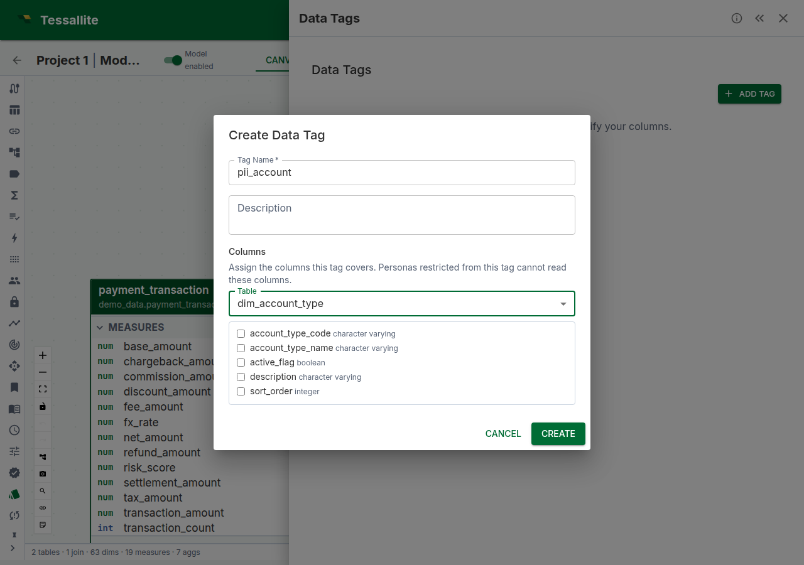

Data Tags
What this covers

Data tags are user-defined labels that group columns by sensitivity, category, or business domain. Tags serve two purposes: they document which columns carry sensitive data (making models auditable), and they drive column-level access control when combined with persona restrictions (see Column-Level Security). This article explains how to create, assign, and manage data tags.
Before you start
- You need at least one model with tables and columns added. See Add Tables to a Model.
- Tags are model-scoped. Each model has its own tag namespace.
What data tags are not
Tags are for access control and governance, not data classification. They tell Tessallite "this column is PII" so the platform can restrict it — they don't tell the data lake "this column is PII" for compliance scanning. Classification belongs at the source; tagging belongs at the semantic layer.
Creating a tag
- Open the Data Tags panel in Model Builder (Toolbelt sidebar).
- Click Add Tag.
- Enter a tag name (e.g.
PII,Financial,Internal Only). - Optionally enter a description explaining what the tag means and who should have access.
- Assign columns in the Columns section (you can also do this later — see below).
- Click Create.
Assigning columns to a tag
- In the Data Tags panel, click the edit (pencil) icon on the tag — or do this while creating it.
- In the Columns section of the dialog, choose a Table from the dropdown.
- Tick the columns the tag should cover. Each assigned column appears as a chip labelled
table_name.column_name; click the chip's × to remove it. - Repeat with other tables if the tag spans more than one.
- Click Update (or Create). The tagged columns now show a tag chip in the table editor's Attributes tab.
You can assign the same column to multiple tags (e.g. customers.email could be both PII and Contact Info).
Grouping strategy
Choose a tagging strategy that matches your governance model:
| Strategy | Tags | Best for |
|---|---|---|
| By sensitivity | PII, Sensitive, Financial, Public | Regulatory compliance (GDPR, HIPAA) |
| By audience | External, Internal, Executive | Role-based access in multi-persona models |
| By domain | Customer, Product, Finance | Large models with cross-functional teams |
Whichever strategy you choose, apply it consistently. Mixed strategies make persona restrictions harder to reason about.
Viewing tags in the model
Tagged columns display a small tag chip next to the column name in the table editor's Attributes tab (double-click a table on the canvas to open it). The lineage graph shows a "N tagged cols" count on semantic nodes that have tagged columns. The Data Tags panel itself lists every tag with its assigned columns — expand a tag row to see them.
Best practices
- Tag new columns promptly. Untagged columns are visible to all personas by default. If you add a new column to a tagged table, remember to tag it if it contains sensitive data.
- Use descriptive tag names.
PIIis better thanTag1. The name appears in persona restrictions, audit logs, and tag chips. - Review tags when the model changes. Source schema drift may add columns that need tagging. Run schema refresh, then review untagged columns.